Sentiment Analysis Model for
Indonesia's 2024 Presidential Candidates
Using SVM
The 2024 general election in Indonesia has become a hot topic on social media, especially on Twitter, which has millions of active users. In this project, me and my Data Mining course teammates analyze Twitter users' sentiments towards the presidential and vice-presidential candidates using the Support Vector Machine (SVM) method. The aim of this research is to classify sentiments into positive, negative, or neutral, thus providing insights into public perceptions of each candidate pair.
Dataset
The data was collected from Twitter during the period from 22 January to 20 March 2024, using scraping techniques focused on six keywords related to the names of the candidate pairs.
Steps
-
Data Scraping
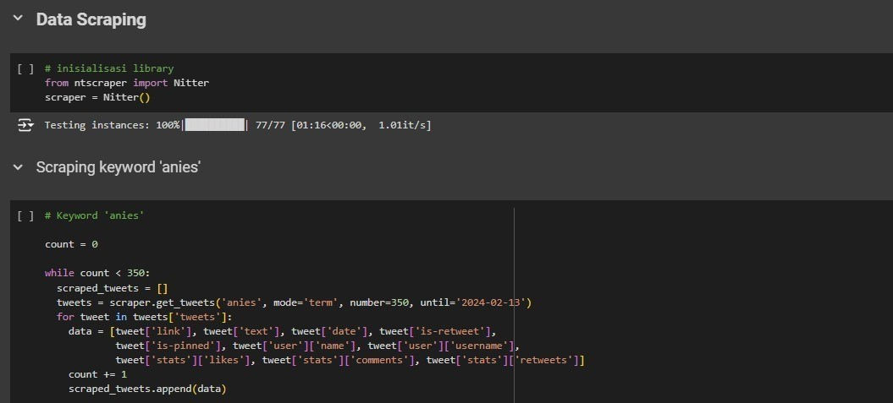 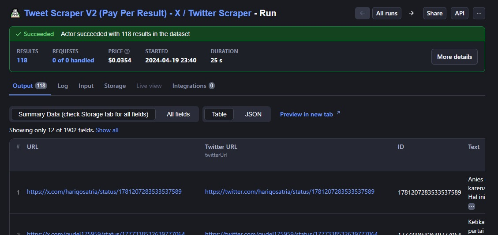Data was collected through scraping using the Nitter library and Apify web, resulting in approximately 1300-1400 tweets per candidate after removing duplicate data.
-
Data Cleaning
Several issues were identified during data preprocessing, including irrelevant data (out of context), duplicate records, and entries with null values. These problems occurred due to various factors, such as exploiters taking advantage of trending hashtags, Twitter buzzers generating noise, and usernames that are identical to the candidates' names.
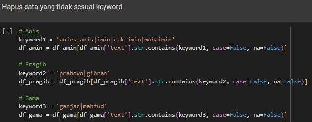 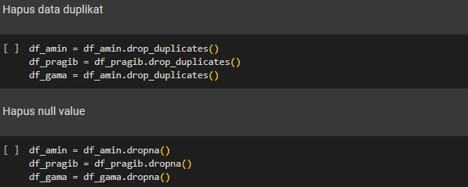To address these issues, the data was cleaned by removing irrelevant entries, eliminating duplicate records, and handling null values appropriately.
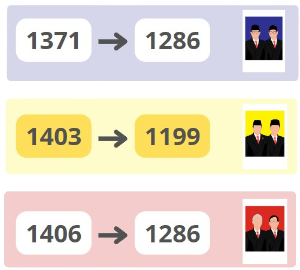As a result, the number of records for each candidate was reduced:
Candidate 01 from 1371 to 1286, Candidate 02 from 1403 to 1199, and Candidate 03 from 1406 to 1286. -
Data Labeling
The labeling process was performed on three sentiment classes: positive, negative, and neutral. Three labeling methods were applied: manual labeling, using the VADER Lexicon tool, and utilizing a model from Hugging Face. Below are the results:
Candidate 01
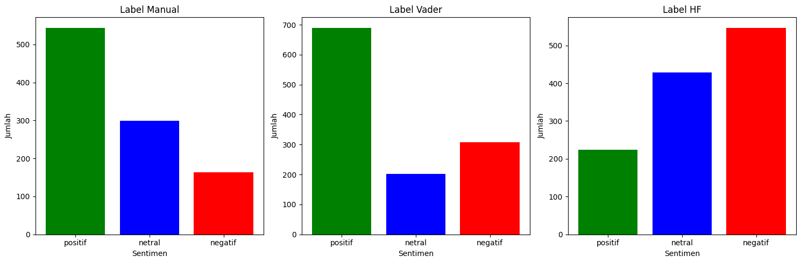The labeling results for Candidate 01 show that both manual labeling and the VADER Lexicon indicate predominantly positive sentiments, while the Hugging Face model reveals a significant amount of negative sentiment.
Candidate 02
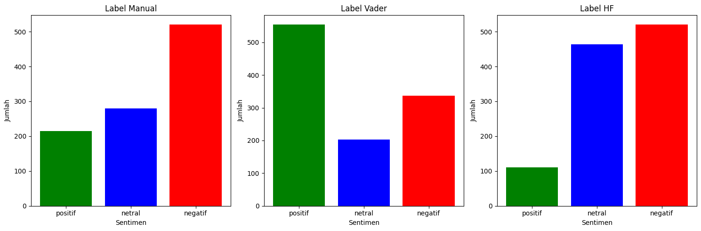For Candidate 02, the results indicate mostly negative sentiments with both manual labeling and the Hugging Face model, whereas the VADER Lexicon shows a predominance of positive sentiment.
Candidate 03
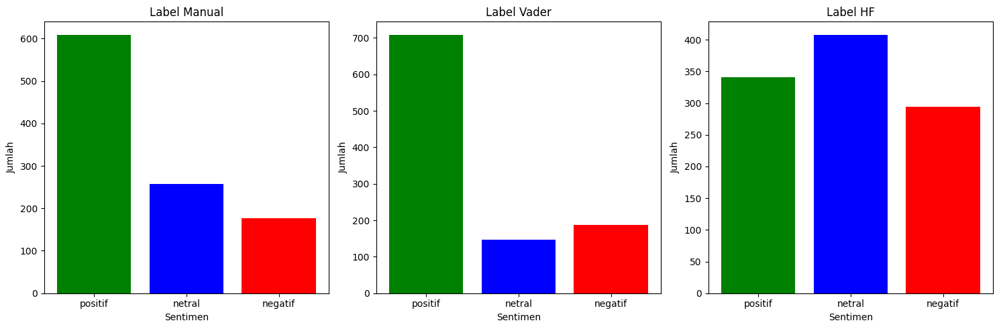As for Candidate 03, both manual labeling and the VADER Lexicon reflect mostly positive sentiments. However, the Hugging Face model presents a more balanced distribution, with neutral sentiment being slightly more prominent.
After exploring and comparing the three techniques, manual labeling was chosen.
It was considered more effective because it allows for more accurate contextual understanding, better handles ambiguity, offers flexibility and customization according to the specific needs of the project, and produces higher-quality data.
-
Tokenizing
Tokenizing is splitting text into smaller units called tokens. There are several steps before and after tokenization, which includes:
Casefolding, ensuring no
nullvalues, converting to lowercase, and removing numbers, punctuation, emoticons, and extra spaces. 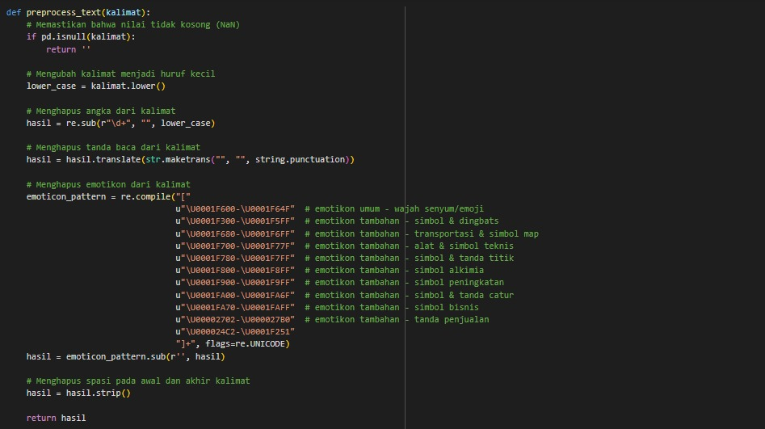Tokenizing, using
word_tokenizefrom thenltklibrary to split sentences into word lists. 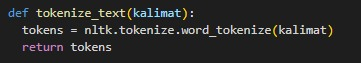Filtering, removing unimportant words with
StopWordRemoverFactoryfromSastrawi. 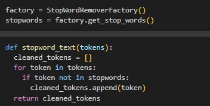Stemming, converting words to their root forms using the
Sastrawilibrary. 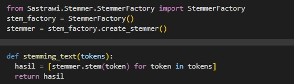Data Exploration, visualizing token frequency and word cloud. Here are the results:
Candidate 01
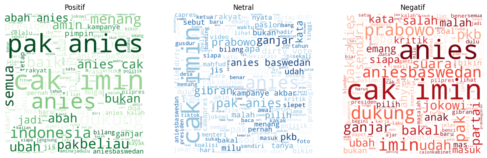Candidate 02
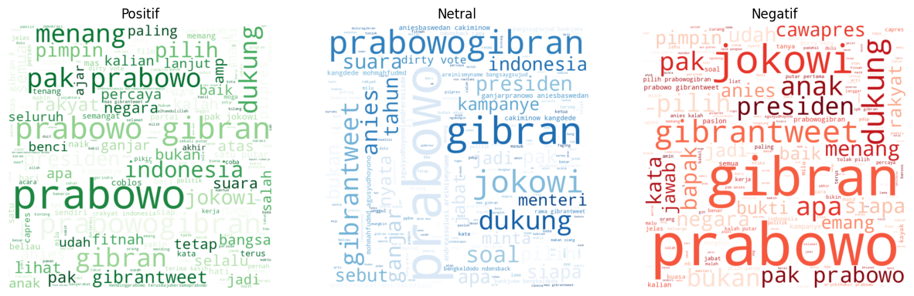Candidate 03
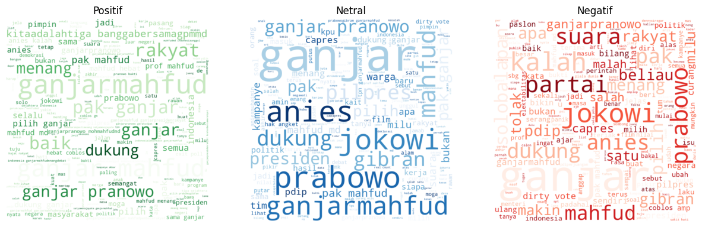After exploration, we discovered several words that provided little meaningful information. As a result, additional words such as "memang, ia, pas, kok, sih, kan, dr, si" and others were added to the stopword list.
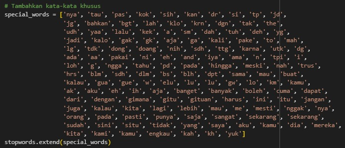 -
Feature Extraction
For feature extraction, the method used is TF-IDF (Term Frequency-Inverse Document Frequency), which converts text data into numerical values based on word importance. TF measures how often a word appears in a document, while IDF reduces the weight of words that occur frequently across many documents, emphasizing more meaningful terms.
Data before TF-IDF
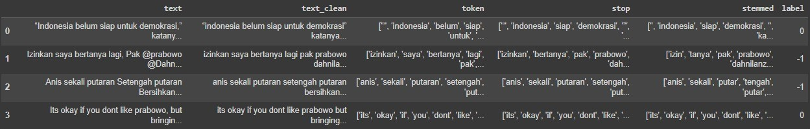Data after TF-IDF
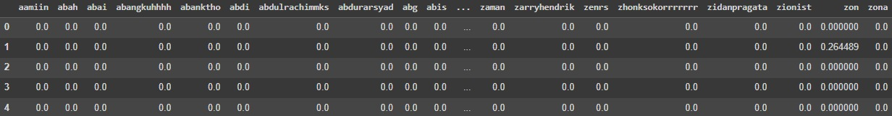 -
Modeling Using SVM Algorithm
Modeling is performed using Support Vector Machine (SVM). SVM works by finding the optimal hyperplane that separates data points from different classes with the largest possible margin. It is effective for sentiment analysis because it performs well with high-dimensional data and helps avoid overfitting, making it suitable for text classification tasks.
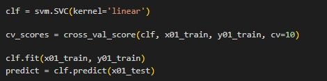After building the model, hyperparameter tuning is conducted. Hyperparameter tuning refers to the process of finding the best combination of parameters to improve model performance. This is done using GridSearchCV, with parameters
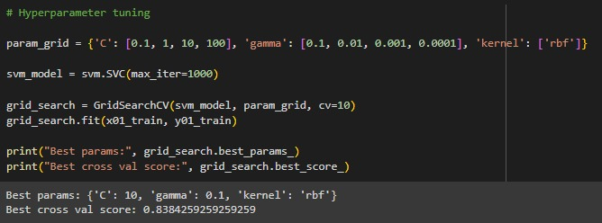C,gamma, andkernelset torbf.
-
Model Evaluation
Model evaluation is performed using cross-validation scores and a confusion matrix.
Cross-Validation, which tests the model’s consistency and generalization on unseen data. The average accuracy from cross-validation indicates how well the model generalizes patterns from the training data to the test data. Meanwhile, the standard deviation of accuracy shows how consistent and stable the model's performance is.
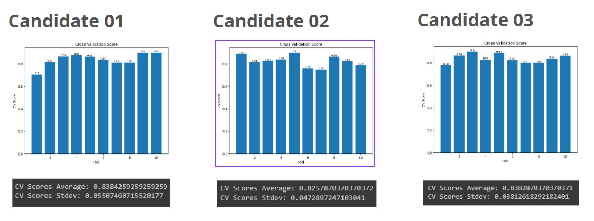Confusion Matrix, a table used to evaluate the performance of a model by comparing predicted values with actual values. From the matrix, several metrics can be derived:
Accuracy measures how often the model makes correct predictions. Precision indicates how many of the predicted positive cases are truly relevant. Recall measures how well the model identifies all actual positive cases, while F1 Score represents the balance between precision and recall.
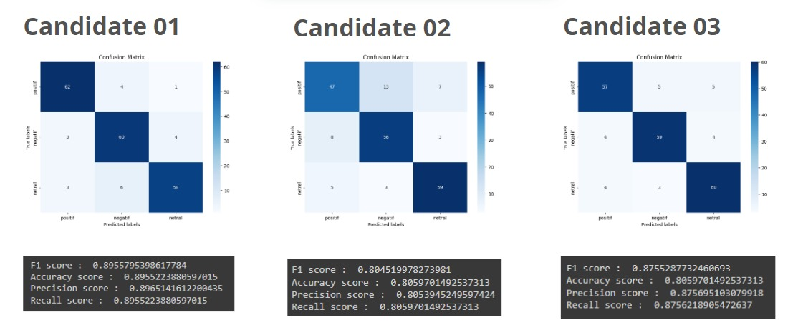Based on the evaluation results, the model demonstrates good performance in predicting sentiment.